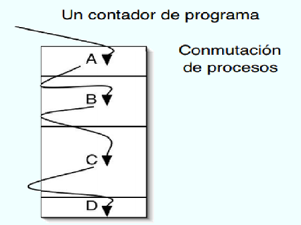

Cuando se utiliza la multiprogramación, el uso de la CPU se puede mejorar.
Dicho de otra manera: si el proceso realiza cálculos solo el 20 por ciento del tiempo que está en la memoria, con cinco procesos en memoria a la vez la CPU deberá estar ocupada todo el tiempo.
Sin embargo, este modelo es demasiado optimista, ya que se supone que los 5 procesos, nunca estarán esperando la E/S al mismo tiempo.
